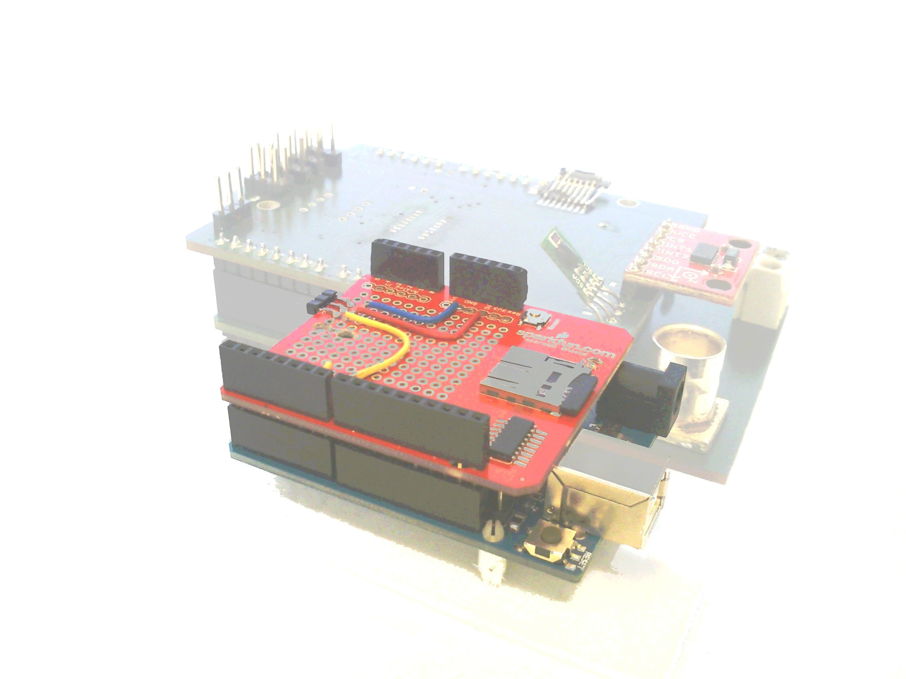
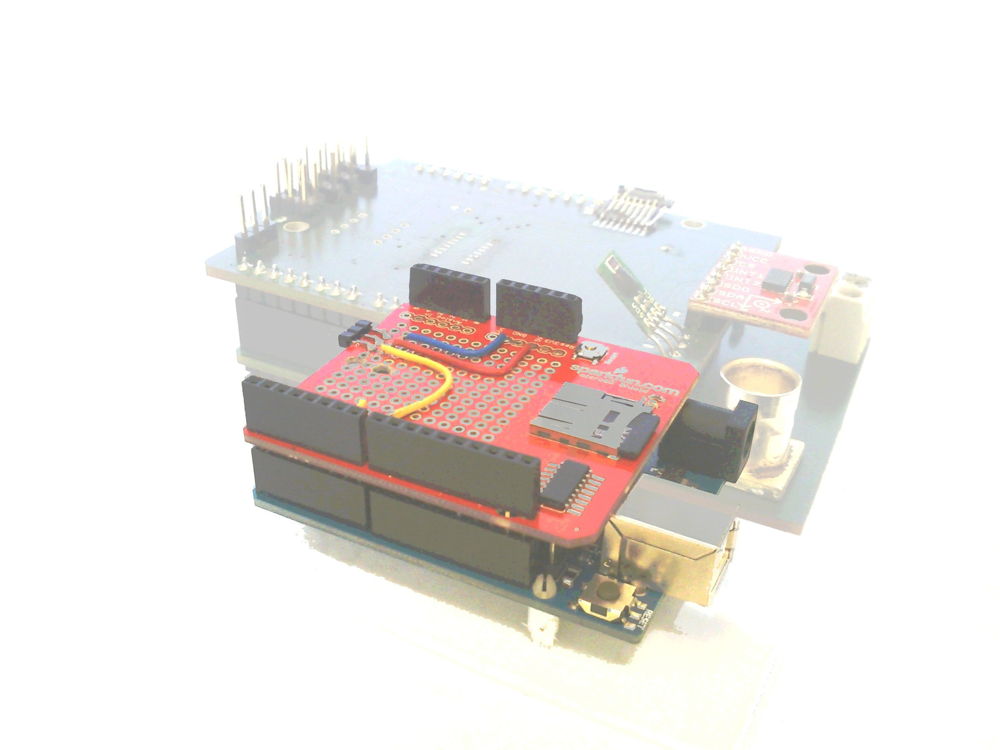

Bienvenue sur le site du projet cookie
Cette page a pour but de décrire notre association et notre projet de ballon stratosphérique
Notre club.
Présentation des membres
Nous sommes un groupe de 6 jeunes, majoritairement lycéens :
- Anthelme
- Rémi
- Lucas
- François
- Arthur
- Pierre
Où sommes nous ?
Nous nous réunissons chaque samedi après midi de 14h à 17h à la MJC d'Ermont pendant l'année scolaire.
Que faisons nous ?
L'élément principal de notre expérience est l'étude de la trajectoire d'un avion miniaturisé à très haute altitude. Mais le ballon transmet aussi des données telles que l'altitude, la pression, la température, ou bien encore la position GPS

Comment ?
Nous allons embarquer un avion en polystyrène à bord de la nacelle, puis nous allons lâcher l'avions dès que les capteurs embarqués à bord mesurerons un altitude suffisante. Le lâcher de l'avion peut peut être être déclenché par un compte a rebours de secours, qui décompte un certain temps de vol, au cas ou les capteurs n'auraient pas rempli leur rôle
Qu'est ballon stratosphérique ?
Citation : Wikipédia
Un ballon stratosphérique est un aérostat capable d'atteindre la stratosphère.
Le ballon va ainsi monter jusqu'à une altitude d'environ 30km, et aura une vitesse de montée de 5m/s. Sa descente sera assurée par un parachute qui lui permettra de retourner en douceur sur notre planète
Le ballon stratosphérique est en fait constitué plusieurs éléments, qui attachés entre eux forment la chaîne de vol, cette chaîne de vol est constituée :
- D'une nacelle en polystyrène, recouverte de couverture de survie pour l'isoler thermiquement
- D'un ballon en latex, qui mesure au sol 2m de diamètre, et qui grossit au fur et a mesure de son ascension jusqu’à atteindre 10m de diamètre a son a, Le ballon grossit car l'air se fait plus rare en altitude et la pression est moindre, il grossit jusqu'a éclater, ce qui lui permet de retomber sur terreterre
- D'un réflecteur radar, qui permet au ballon d’être détecte par les avions qui peuvent ainsi l'éviter
- D'un parachute, qui permet de ralentir le ballon lors de sa descente
Ce ballon va être lâché le 29/07/2013 Lors du C'Space, un événement organisé par planète sciences


Les capteurs
Voici tous les capteurs que nous avons intégrés :
- Un GPS (pour suivre et retrouver la nacelle)
- Deux capteurs de pression, un a l'intérieur, et l'autre à l'extérieur
- Deux capteurs de température, un a l'intérieur, et l'autre à l'extérieur
- Un accéléromètre (pour mesurer les perturbations)
- Un capteur d'humidité
 
